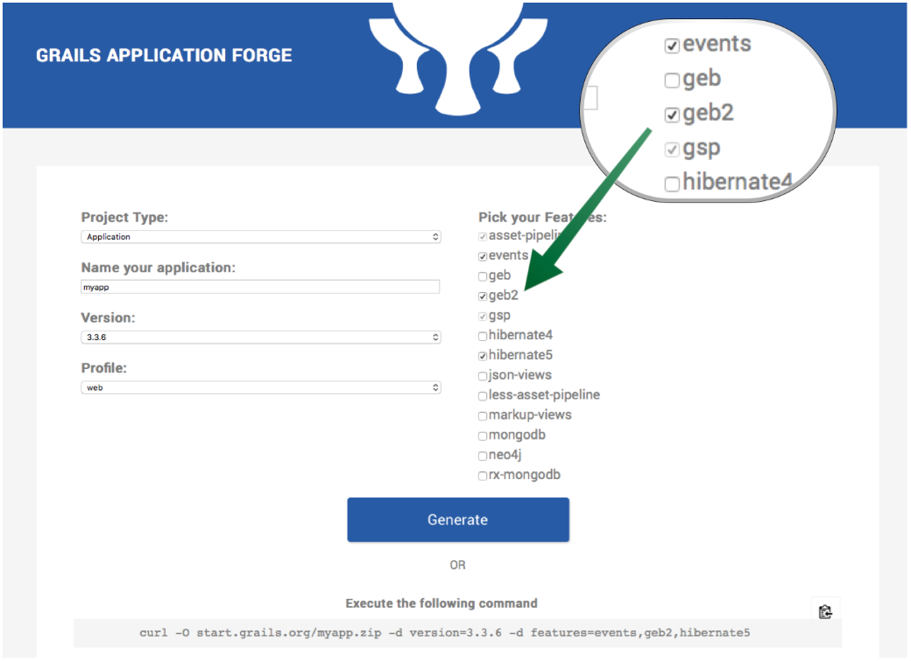
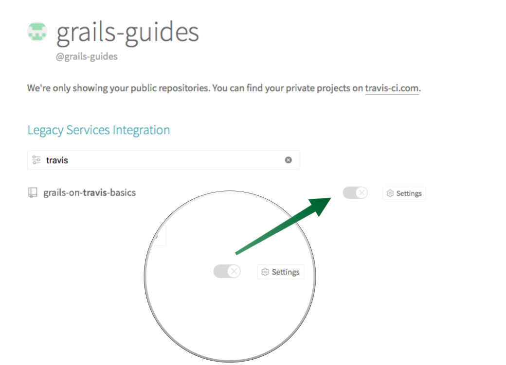

Grails on Travis Basics
In this guide, we will learn how to setup Travis CI to build and test a Grails application.
Authors: Nirav Assar, Sergio del Amo
Grails Version: 4
1 Grails Training
2 Getting Started
Every software project needs Continuous Integration (CI).
Continuous Integration is the practice of merging in small code changes frequently - rather than merging in a large change at the end of a development cycle. The goal is to build healthier software by developing and testing in smaller increments.
Travis CI is a continuous integration platform seamlessly integrated with GitHub. It supports your development process by automatically building, testing and deploying code changes.
In this guide you are going to create a Grails application on GitHub and use Travis CI to build and test your code. This guide assumes you are familiar with Git and GitHub. It also assumes that you already have a GitHub account. The guide will cover only build and test an Grails application with Travis. However, Travis CI has the ability to deploy, send notifications, and highly customize CI jobs.
Travis has a free plan for open source projects. Thus, it is really convenient to build and test an open source Grails Plugin which you may wish to contribute to the community.
2.1 What you will need
2.2 How to complete the guide
3 Writing the Application
The initial project contains a Grails Application created with the web profile and the geb2 feature
with the Grails Application Forge.

The geb2 features includes a dependency to the latest version of Geb which is not compatible with JDK 1.7. If you need to support 1.7 use the geb feature
instead.
Using the geb2 feature modifies your build.gradle as follows:
buildscript {
...
dependencies {
...
link:../snippets/build.gradle[role=include]
}
}
...
...
...
link:../snippets/build.gradle[role=include]
...
...
...
dependencies {
...
...
link:../snippets/build.gradle[role=include]
}
link:../snippets/build.gradle[role=include]| 1 | Apply the Webdriver binaries Gradle Plugin. A Gradle plugin that downloads WebDriver binaries specific to the operating system the build runs on. The plugin also as configures various parts of the build to use the downloaded binaries. |
| 2 | Include a testCompile dependency to the Geb Grails plugin which has a transitive dependency to geb-spock. |
| 3 | Adds the necessary selenium dependencies to use Chrome |
| 4 | Adds the necessary selenium dependencies to use Firefox |
| 5 | Geb is built on top of WebDriver. You need these testCompile dependencies. |
| 6 | Configures the ChromeDriver version to be used by the Webdriver binaries Gradle Plugin. |
| 7 | Configures the GeckoDriver version (e.g. Firefox) to be used by the Webdriver binaries Gradle Plugin. |
3.1 Unit Test
The initial application contains a unit test which verifies the default UrlMapping for /.
link:../snippets/src/test/groovy/example/grails/UrlMappingsSpec.groovy[role=include]3.2 Integration Test
The initial application contains a functional test which uses Geb to verify that the Home Page
displays the sentence Welcome to Grails.
link:../snippets/src/integration-test/groovy/example/grails/DefaultHomePageSpec.groovy[role=include]| 1 | Ignore test unless system property geb.env is present. |
3.3 Verbose Test Output
When running the tests in a continuous integration server is useful to have a more verbose output.
Modify build.gradle:
tasks.withType(Test) {
link:../snippets/build.gradle[role=include]
}When we execute the tests we will see output such as:
$ ./gradlew test
....
...
example.grails.UrlMappingsSpec > test forward mappings PASSED3.4 Run Tests
Verify everything executes correctly up to this point.
./gradlew -Dgeb.env=chromeHeadless check.
{commondir}/common-testApp.adoc
4 Create GitHub Repo
We will need to place the Grails application on GitHub so that Travis can access it.
Proceed to GitHub and follow the directions to create a new repository.
| When creating the repo, make it public. Option not to create a LICENSE and .gitignore. We are importing an existing code base so we want to avoid conflicts. |
Add License
Add the MIT license file. Travis CI is free with an Open Source License. You can create a file titled LICENSE. with the content:
link:../snippets/LICENSE.txt[role=include]
Let’s create an empty travis-build.sh, for which we will use later in the guide.
> touch travis-build.shImport the code into the repo on GitHub by executing the following commands:
> git init
> git add .
> git commit -m "first commit"
> git remote add origin <Your repo URL>
> git push -u origin master4.1 Grant File Permissions for Execution
In order for Travis to execute the Grails build, the access permissions, or modes, must be changed for some files. We will alter modes using
chmod within Git.
Grant permissions for gradlew and travis-build.sh:
> chmod=+x gradlew
> chmod=+x gradlewtravis-build.sh
> git commit -m "chmod a+x gradew and travis-build.sh"
> git push5 Integrate Travis CI
Travis CI integrates directly with your GitHub account. Follow the directions on the Travis website for Getting Started.
In short you will need to:
-
Use your GitHub account to sign into Travis.
-
Give permission to Travis to access your repositories.
-
Enable the repository with Travis CI.
-
Create a
.travis.yml
The next image shows how to enable the repository with Travis CI:

5.1 Create Travis Config File
The .travis.yml file tells Travis what to do. It must be located at the top level of your project. For a Grails project,
note that we have set the language: groovy. Travis comes with reasonable defaults. If the project has build.gradle in the
repository root, Travis runs gradlew assemble in the install phase, and gradlew check in the test phase.
link:../snippets/.travis.yml.default[role=include]| 1 | Gives the default Ubuntu infrastructure. |
| 2 | This line up to before_cache is caching configuration tells Travis CI explicitly that you want to store and use the Gradle cache and Wrapper for successive invocations of the build. Read Executing Gradle builds on travis ci. |
| 3 | Select groovy as the language. |
| 4 | Select the Java jdk8. |
Commit the change to Git push them to the remote repository. Upon the push, go to https://travis-ci.com/ and view the build running. Once the build is complete, restart the build to demonstrate that Travis will use the cache for dependencies.
Gradle check task executes both test and integrationTest tasks which in turn execute Grails Unit and Integration/Functional Test.
However, the feature method DefaultHomePageSpec is ignored if we do not specify the system property geb.env.
5.2 Delegate to Script File
In order to be more expressive with the build, we can delegate to a script file. In this scenario, Travis will execute a specified file
and skip the defaults. Below is a .travis.yml which delegates to a .sh file.
link:../snippets/.travis.yml[role=include]| 1 | The Google Chrome addon allows Travis CI builds to install Google Chrome at run time. To use the addon you need to be running builds on either the Trusty build environment or the OS X build environment. |
| 2 | Skip installation step entirely. |
| 3 | Delegate to a script. |
The script below runs both unit and integration/functional tests. The Geb test is run using Chrome in headless mode.
link:../snippets/travis-build.sh[role=include]| 1 | Execute ./gradlew -Dgeb.env=chromeHeadless check command. |
Commit the change to Git push them to the remote repository. Upon the push, go to https://travis-ci.com/ and view the build running.